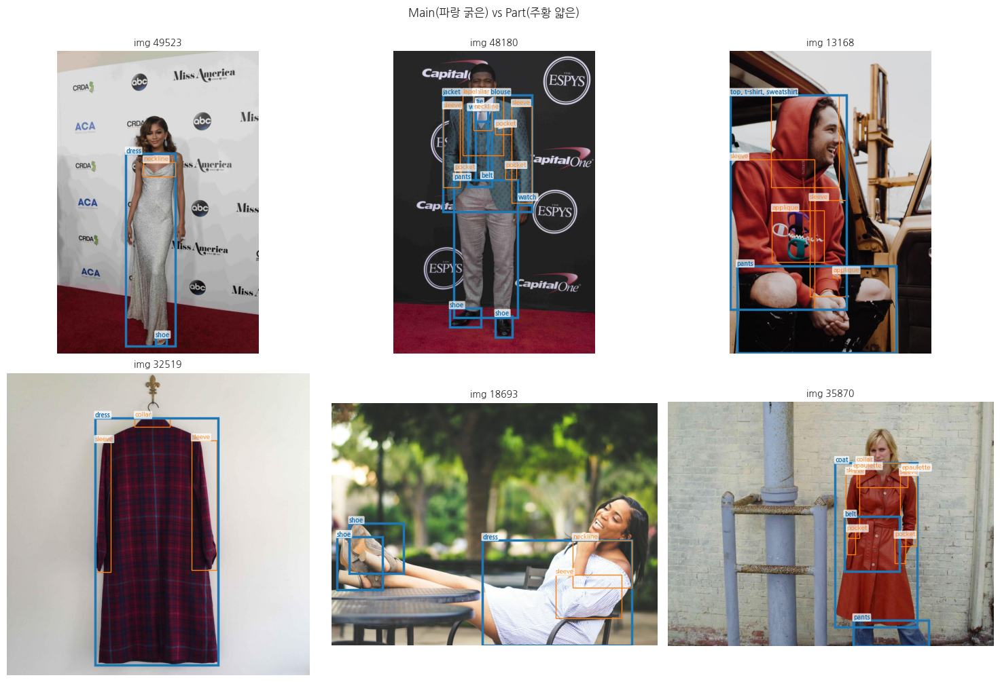
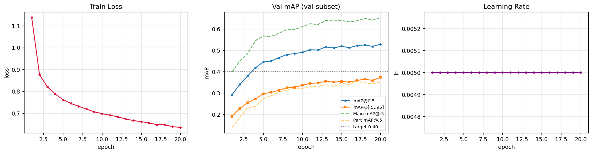
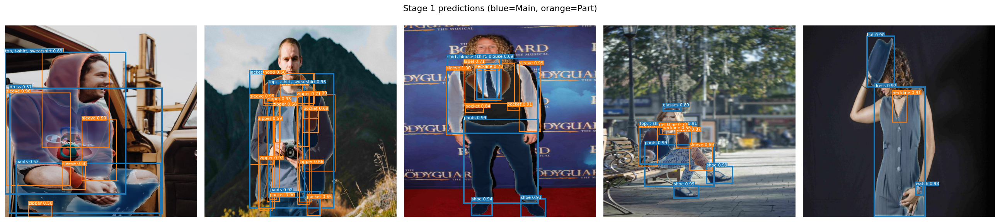
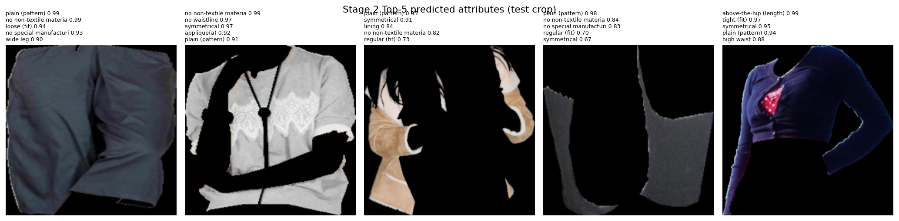
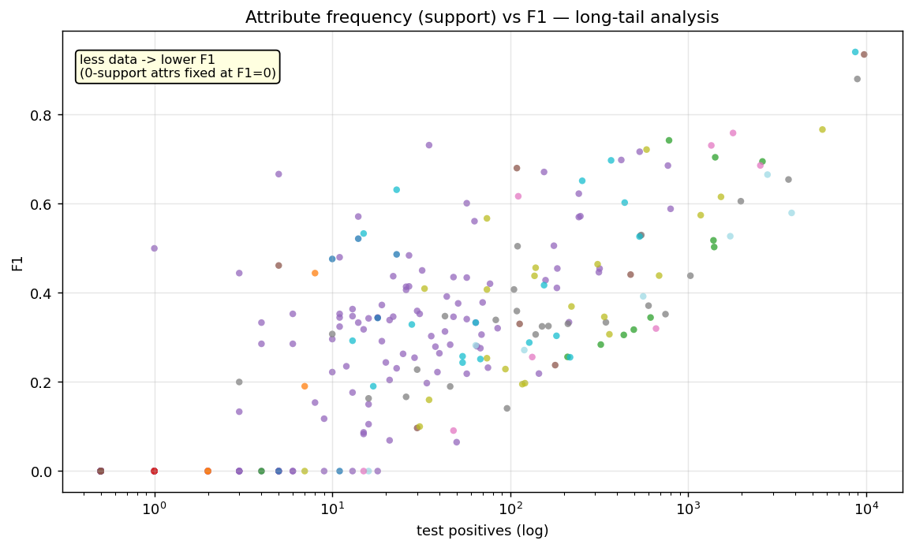

Built a 2-Stage pipeline on 45,623 Fashionpedia images that detects 46 garment/part types at the pixel level (Mask R-CNN)
and tags 294 attributes on each detected garment (ResNet-50), then shipped it as a live demo.
Upload a photo to see garment/part detection (blue = garment, orange = part), top attributes per garment, and the full JSON tree in real time.
※ The free HuggingFace Space sleeps after inactivity, so the first run may take tens of seconds to wake up.
If the demo does not load, open in a new tab
From a full-body fashion photo, segment garments and parts at the pixel level and tag each garment's attributes (length, silhouette, material, pattern, etc.).
Detection and attribute tagging differ fundamentally in input, output, and metrics, so instead of one model I split the task into a 2-Stage pipeline: detections are cropped and passed to the attribute classifier.
| Source | Fashionpedia (images as HuggingFace Parquet, annotations as COCO JSON) |
| Images / annotations | 45,623 / 333,401 |
| Categories | 46 = 27 main garments + 19 garment parts |
| Attributes | 294 (11 supercategories) |
| Assumption | Result | Evidence |
|---|---|---|
| Main garments are attribute-richer than parts | ✅ | Main 7.56 vs Part 1.39 attrs (5.4×) → Stage 2 trains on main only |
| Attribute long-tail is "mild" | ✅ | 218 / 294 (74%) appear ≥ 100 times → trainable with BCE + pos_weight |
| Main↔Part mapping | ⚠️ | Natural pairs (shirt→sleeve) dominate, but unnatural ones exist (shoe→sleeve 31K) → box-IoU post-processing needed |

| Step | Process | Output |
|---|---|---|
| Image index | Scan 7 Parquet files | Lazy-load index for 45,623 images |
| Stage 2 crops | Filter main + ≥1 attr → mask-out background → 224×224 | 76,864 crops (47.1% of main) |
| Split (seed=42) | 70/15/15 (per image) | train 31,937 / val 6,843 / test 6,843 |
| pos_weight | Inverse frequency, clipped at 10 | 294-dim (293 attrs weighted > 1) |
52.9% of main garments have zero attributes (accessories / missing labels) and were excluded from Stage 2 training.
| Stage 1 — detection/segmentation | Stage 2 — attribute tagging | |
|---|---|---|
| Model | Mask R-CNN ResNet50-FPN (47-class, ~44M) | ResNet-50 + FC head (294-dim, ~25.6M) |
| Input | RGB 800×800 | Garment crop 224×224 (background removed) |
| Loss | torchvision built-in (RPN+cls+bbox+mask) | BCEWithLogitsLoss(pos_weight) |
| Optimizer | SGD (lr 0.005) | Adam (lr 1e-4) + warmup 3 + cosine |
| Epochs / Metric | 20 / mAP@0.5 | 30 / F1 macro |
Common : seed 42, grad clip 1.0, ImageNet Normalize, EarlyStopping patience 5. Post-processing group_instances() assigns each part to the garment with the highest box IoU / containment.
| Metric | test | Target | Pass |
|---|---|---|---|
| mAP@0.5 | 0.4859 | ≥ 0.40 | ✅ |
| mAP@[.5:.95] | 0.3313 | ≥ 0.25 | ✅ |
| Main mAP / Part mAP | 0.6143 / 0.3034 | — | Main >> Part |


| Metric | F1 macro | Precision | Recall |
|---|---|---|---|
| All 294 attributes (test) | 0.2503 | 0.2028 | 0.3669 |
| Learnable attrs only (support≥200, 55) | 0.5401 | — | — |
The overall F1 (0.25) misses the 0.50 target, but this is a metric/data issue, not a model one (see insights).

Part mAP (0.30) is half of main mAP (0.61). Parts (sleeves, collars, pockets) combine small objects + extreme rarity, making them hard to pass IoU thresholds — a structural limit already foreshadowed in EDA.

| Evaluated on | # attrs | macro-F1 |
|---|---|---|
| All | 294 | 0.2503 |
| support ≥ 50 | 106 | 0.4506 |
| support ≥ 200 | 55 | 0.5401 (above target) |
68 attributes have zero positives in test → mathematically F1=0, yet they're included in the average. The monotonic trend proves the limit is data (rare attributes), not the model. I report both the overall and the fair metric.
BCE (0.244) vs Focal (0.245) gives near-identical F1 — Focal only shifts the precision↑/recall↓ balance. Attributes with 0–dozens of positives can't be learned by any loss. The bottleneck is data, not the loss.
F.interpolate) cut it to ~1.2 min.meta_names.json (37KB) instead of the original annotation (517MB), so the Space ships without huge files.